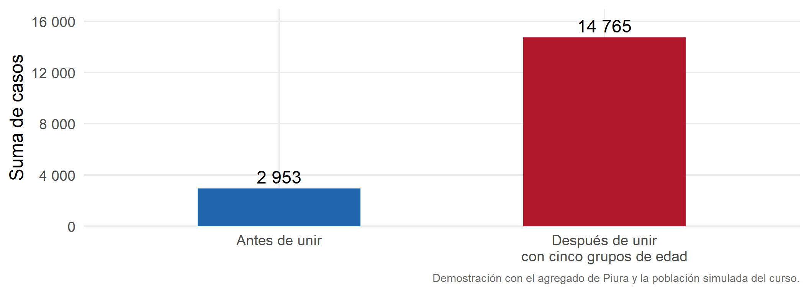

Fuentes, calidad e integración de datos
Inteligencia Sanitaria · Sesión 2
2026-11-16
De la señal a una recomendación
- En la S1 encontramos una señal de dengue en Piura.
- Escribimos qué le diríamos al director y qué información pediríamos.
- Hoy revisamos qué nos permiten decir los datos y qué falta para precisar la recomendación.
¿Qué dato pidieron y qué cambiaría si lo tuvieran?
Volvemos a Piura
La señal que discutimos en S1

473 casos en la SE 10 frente a una mediana de 18,5. ¿Qué hace falta verificar antes de precisar la intervención?
El director pide precisar la recomendación
«Veo que los casos están por encima de lo habitual. ¿Qué me recomiendan hacer? ¿Qué necesitan comprobar para decirme dónde y cómo actuar?»
- ¿Sabemos a qué lugar corresponden los casos?
- ¿Estamos comparando periodos y definiciones equivalentes?
- ¿Sabemos dónde ya se intervino y qué capacidad tienen los servicios?
Elegir fuentes para una decisión
De la pregunta al dato necesario
| Para decidir sobre… | Necesitamos… | Debemos comprobar… |
|---|---|---|
| Carga notificada | Casos por territorio y periodo | Definición, fecha y corte |
| Comparación poblacional | Casos y población | Mismo territorio, año y edades |
| Preparación de servicios | Atención y capacidad disponible | Hospitales, referencias, camas e insumos |
| Condiciones ambientales | Temperatura y precipitación | Unidad, cobertura y periodo |
| Ampliación de brigadas | Casos e intervenciones realizadas | Dónde, cuándo y con qué cobertura |
Una pregunta puede revelar una fuente que falta
En S1 propusimos identificar distritos sin control vectorial en curso que superan su referencia histórica.
- La vigilancia permite examinar casos y tendencia.
- El registro de intervenciones permite saber dónde ya se actuó.
- El cruce permite comprobar qué distritos cumplen ambas condiciones.
¿Cómo responderíamos si solo tuviéramos la primera fuente?
Cada fuente necesita una ficha
| Campo | Qué registrar |
|---|---|
| Procedencia | Institución, enlace o responsable que entrega la base |
| Versión | Fecha de descarga o extracción; corte declarado |
| Cobertura | Territorios, población y periodo incluidos |
| Unidad de observación | Qué representa una fila |
| Variables | Definición, unidad y códigos |
| Limitaciones | Qué falta y qué uso restringe |
Conservar la fuente original y documentar las transformaciones (Wilson et al. 2017).
Lo que tenemos para el taller
| Archivo | Qué representa una fila | Alcance |
|---|---|---|
| Dengue de Piura | Distrito × año × semana × clasificación × diagnóstico | Agregado de NotiSP |
| Población | Distrito × año × grupo de edad | Simulada |
| Ubigeos | Código y nombres de un distrito del marco | Derivado de metaxénicas; incompleto |
| Clima (complemento) | Distrito × año × semana | Simulado |
Los datos simulados permiten practicar la integración. Sus valores no sustentan una recomendación territorial real.
Examinar la calidad
Calidad para el uso que queremos darle
- Completitud: ¿qué campos o reportes faltan?
- Validez: ¿los valores cumplen las reglas documentadas?
- Consistencia: ¿variables y totales son compatibles?
- Oportunidad: ¿el dato llega a tiempo para decidir?
- Representatividad: ¿quiénes o qué territorios quedan menos visibles?
Adaptado de Centers for Disease Control and Prevention (2001) y World Health Organization (2017).
Una base sin celdas vacías
Revisamos el CSV y todas las variables están completas.
¿Qué podemos concluir?
- Los campos presentes en el archivo no tienen valores faltantes.
- Sigue pendiente saber si se recibieron todos los reportes esperados.
- También queda por evaluar qué casos nunca llegaron a notificarse.
¿Qué fuente permitiría examinar cada pendiente?
Tres preguntas diferentes sobre lo que falta
| Pregunta | Qué revisamos | Qué necesitamos |
|---|---|---|
| ¿Qué campos quedaron sin llenar? | Completitud de campos | Archivo y diccionario de datos |
| ¿Quiénes enviaron su reporte? | Completitud de reportes | Reportes recibidos y esperados |
| ¿Qué proporción de casos se detectó? | Sensibilidad de la vigilancia | Otras fuentes o estudios específicos |
La sensibilidad relaciona los casos detectados con los casos ocurridos. Para estudiarla hace falta información adicional.
Si desconocemos cuántos reportes esperábamos, debemos dejarlo indicado; contar las filas del archivo no resuelve esa pregunta.
¿Qué significa una fila repetida?
En este archivo esperamos una sola fila para cada combinación de:
año + semana + ubigeo + clasificación clínica + tipo de diagnóstico.
- Un distrito aparece muchas veces: puede ser correcto.
- Si se repite la combinación completa, averiguamos por qué.
- La base no tiene identificadores individuales para buscar duplicados de personas.
Primero definimos la unidad; después buscamos duplicados.
Un valor llamativo pide explicación
- Un aumento puede corresponder a transmisión, búsqueda activa o cambios de registro.
- Una caída puede coincidir con menos transmisión o con reportes pendientes.
- Una cobertura de vacunación mayor de 100 % requiere revisar numerador y denominador.
Antes de cambiar ese valor, averiguamos qué pasó y anotamos por qué decidimos conservarlo o corregirlo. Esa explicación queda en la bitácora.
Antes de la pausa
Para la recomendación de su equipo:
- Identifiquen un problema de datos que podría cambiarla.
- Expliquen cómo lo comprobarían.
- Señalen qué podrían hacer mientras se verifica.
Pausa: 19:00–19:10.
Tiempo y territorio
¿A qué momento pertenece un caso?
| Fecha | Qué permite examinar |
|---|---|
| Inicio de síntomas | Cuándo empezó la enfermedad registrada |
| Notificación | Cuándo se comunicó al sistema |
| Extracción o corte | Qué versión de la información estamos usando |
La curva de S1 está organizada por inicio de síntomas. El archivo consolidado no contiene las fechas necesarias para medir el retraso de notificación.
El mismo periodo puede cambiar entre cortes
Ejemplo ficticio para discutir el retraso:
| Semana de inicio de síntomas | Casos en un primer corte | Casos en un corte posterior |
|---|---|---|
| SE 8 | 40 | 43 |
| SE 9 | 35 | 48 |
| SE 10 | 20 | 50 |
En el primer corte parece haber una caída. Las notificaciones incorporadas después cambian la lectura.
Para estimar ese proceso necesitamos fechas o cortes históricos; esta tabla no describe Piura.
Filtrar semanas no recupera un corte histórico
En la extracción disponible, los 2953 casos de las SE 1–10 de 2023 figuran como confirmados.
- Eso describe la clasificación que vemos en este archivo.
- No prueba que todos estuvieran confirmados al terminar la SE 10.
- Para reconstruir la decisión de aquel momento necesitamos versiones históricas o una historia de cambios suficiente.
Cero, falta de información y periodo futuro
| Situación | Tratamiento justificado |
|---|---|
| Periodo observado; la fuente respalda ausencia de casos | Cero |
| No hay fila y desconocemos el reporte | Ausencia por verificar |
| Semana posterior al corte del ejercicio | Fuera del periodo observado |
Para completar con ceros, primero debemos saber qué lugares y semanas cubre el archivo. Si los datos llegan hasta una semana determinada, las siguientes todavía no son semanas observadas sin casos.
La semana necesita año y calendario
- La SE 10 aparece en todos los años: unir solo por semana mezcla periodos.
- El calendario epidemiológico de la fuente define las fechas de cada semana y si existe SE 53.
- Una semana ausente del CSV no demuestra que no existiera en el calendario.
- Para este ejercicio usamos 2023, SE 1–10, un intervalo explícito.
Consultar el calendario epidemiológico 2023 del CDC Perú y documentar el tratamiento de los límites de año.
¿Dónde ocurrió, se notificó o se atendió?
| Ubicación | Uso que debe examinarse |
|---|---|
| Residencia | Comparación con población residente |
| Notificación | Organización del reporte y vigilancia |
| Atención | Demanda de establecimientos y redes de referencia |
El archivo llama al campo ubigeo, pero no aclara si se refiere a residencia, notificación o atención. Antes de usarlo, se lo preguntamos a quien preparó la base.
Una tasa requiere que numerador y denominador se refieran a una población compatible.
Los territorios sin filas también importan
En las SE 1–10 de 2023:
- 39 distritos aparecen con casos.
- La lista de distritos del curso contiene 65 ubigeos de Piura.
- En 26 no aparecen registros para esas diez semanas.
¿Qué tendría que garantizar la fuente para que pudiéramos poner cero? ¿Qué le preguntarían a quien preparó la base?
El marco del curso es incompleto a escala nacional; no sustituye un padrón oficial actualizado.
Integrar sin cambiar el significado
Antes de unir, definir la tabla que necesitamos
Para el ejercicio principal:
Una fila = un distrito en 2023, con sus casos acumulados en SE 1–10 y su población anual.
- Agregamos las categorías clínicas y diagnósticas del numerador.
- Sumamos los grupos de edad del denominador para todas las edades.
- Unimos por ubigeo + año y revisamos que cada distrito encuentre la población que le corresponde.
Una unión puede multiplicar los casos

Cada distrito encuentra cinco filas de población. ¿Qué pasó con el numerador?
Una unión correcta deja comprobaciones
| Control | Resultado esperado en este ejercicio |
|---|---|
| Población por distrito y año | Una fila después de sumar edades |
| Ubigeos | Texto, con sus seis dígitos |
| Distritos con casos sin población | Ninguno; si los hay, resolver antes de calcular |
| Filas tras unir población | Las mismas que en casos por distrito |
| Suma de casos tras unir | 2953, igual que antes |
Antes de unir, revisamos cuántas filas puede encontrar cada clave en la otra tabla (Wickham et al. 2023).
El indicador debe decir qué representa
Casos notificados acumulados en SE 1–10 por 100 000 habitantes:
[ {} ,000 ]
- En el taller el denominador es simulado y el cálculo es docente.
- El periodo de diez semanas no se convierte en un indicador anual.
- Para usarlo realmente falta confirmar la ubicación del numerador y un denominador oficial compatible.
Conteo e indicador poblacional ayudan a decisiones distintas
- El conteo describe la carga notificada y puede orientar necesidades de investigación o atención.
- El indicador poblacional pone esa carga en relación con el tamaño de la población correspondiente.
- Para asignar brigadas también importan tendencia, intervenciones previas, acceso y capacidad de respuesta.
Para la decisión que eligieron, ¿qué aporta cada indicador y qué otra información pedirían?
Clima: comprobar la correspondencia antes de modelar
- El archivo del curso tiene temperatura y precipitación semanales simuladas.
- Una tabla distrito × año × semana puede unirse por esas tres claves.
- Verificar unidades, definición de semana y cobertura territorial antes del cruce.
- Al reemplazarla por clima observado, documentar su fuente y agregación (Funk et al. 2015).
La S5 trabajará predictores y rezagos. En esta sesión comprobamos la integración.
Ejercicio breve por equipos
En 5 minutos:
- Retomen la pregunta que trajeron de S1.
- Identifiquen la fuente que responde a la parte principal de esa pregunta.
- Expliquen qué dato falta o qué diferencia entre las fuentes podría obligarlos a cambiar la respuesta.
Puesta en común: 5 minutos. Propongan cómo verificar el problema o ajustar el alcance.
En el taller de hoy
- Reconocer las bases y comprobar estructura, claves y totales.
- Examinar las ausencias dentro de un periodo definido.
- Detectar y corregir una unión que multiplica casos.
- Construir e interpretar un indicador docente con población simulada.
- Revisar las fuentes y el alcance de la pregunta del equipo.
Práctica: ¿está preparada nuestra base para responder al director regional?
Qué llevamos al Avance 1
- Pregunta y decisor definidos.
- Fuentes identificadas y acceso comprobado o pendiente documentado.
- Inconvenientes concretos y cómo se abordarán.
- Primeras decisiones registradas en una bitácora.
La entrega de S2 sigue siendo un párrafo con evento, departamento y pregunta.
Volver al director regional
Con estos datos podemos sostener ____.
Todavía necesitamos verificar ____, porque podría cambiar ____.
Mientras se verifica, proponemos ____, considerando ____.
En S3 examinaremos cómo construir e interpretar una señal temporal con las decisiones sobre datos documentadas.
Antes de cerrar: ¿qué harían ustedes?
Tres minutos, individual y sin nota. Respondan con una razón breve.
- Los datos llegan hasta SE 10. ¿Cómo tratarían cada situación?
| Situación | ¿Cero, información pendiente o fuera del periodo? |
|---|---|
| Reporte completo que declara ningún caso en SE 9 | |
| Un establecimiento no entregó su reporte de SE 9 | |
| Queremos añadir la SE 11 |
- Cada fila de casos encuentra cuatro filas en otra tabla. ¿Qué ocurriría al sumar los casos después de unir? ¿Cómo lo revisarían?
- Para la decisión de su equipo, escriban algo que pueden afirmar hoy y un dato que pedirían. Expliquen qué podría cambiar con ese dato.
Referencias
Inteligencia Sanitaria · DEAEA, FASPA-UPCH · S2